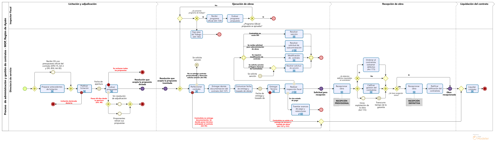
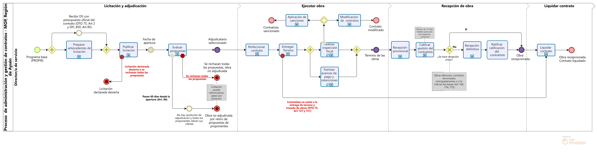

Proceso de Gestión y Administración de Contratos
Fecha de publicación:
Ministerio de Obras Públicas
El Ministerio de Obras Públicas (MOP) forma parte de las 17 secreatarias de estado de la República de Chile, centrando su misión en la detección de la necesidades de la comunidad para el posterior desarrollo y entrega de servicios de infraestructura y proyectos de regulación del recurso hídrico del territorio.
<<<<<<< HEAD  =======  >>>>>>> d357f2acb4f047f391b8424c1180dfba56730674Para cumplir con sus declaraciones misionales, es necesaria la identificación de necesidades de la comunidad, formulación de iniciativas de inversión, su planificación, ejecución, control, monitoreo y entrega del servicio de infraestructura o resultado del proyecto. Para tener una visión general de sus actividades, se propone en la siguiente figura un diagrama que reúne los principales procesos realizados por el MOP.
Proceso de gestión y administración de contratos
El Proceso de Gestión y Administración de Contratos (PGAC), reúne todas las actividades desarrolladas por los servicios del Ministerio para llevar a cabo la ejecución de la iniciativas de inversión de contratos de obras públicas. Este corresponde al último proceso previo a la entrega de los servicios de infraestructura de la comunidad, teniendo como base el Programa Público de Inversiones Regionales (PROPIR).
Propuesta de visualizador
La presente página web tiene por objetivo entregar una propuesta de un visualizador del PGAC, para mejorar su entendimiento por medio de la sistematización de sus actividades, haciendo uso de una serie de diagramas basados en el Business Process Model and Notation (BPMN), y en la normativa vigente, destacando el reglamento de contratos de obras públicas (contenido en el Decreto N° 75 del MOP). Además, se trabaja con la Dirección Regional de Planeamiento de la Región de Aysén para la recepción de retroalimentación y validación de los diagramas propuestos. En la siguiente figura, se presenta una propuesta de diagrama del proceso general, donde se definen cuatro fases con sus respectivos subprocesos, que que permiten sistematizar el conjunto de actividades realizadas por los servicios para la ejecución de sus contratos de obra pública.